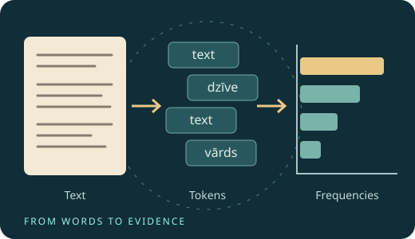

1. Unicode inspector
Enable JavaScript to run this model.
Technical week 03 · Version 1 · 25 November 2026
From words to evidence — prepare multilingual text, count word forms, and interpret the results.
90-minute core · Digital Humanities · original lecture 4 November 2026

Six browser laboratories use JavaScript. Python examples run in the canonical notebook. Browser excerpts are short, not whole-book corpora; synthetic examples are labelled. The canonical Python tokenizer uses NFC, casefold() and a Unicode-aware regular expression. Browser lowercasing and letter categories approximate that policy; differences are documented below.
Alice — full source · Veidenbaums — full source · Notebook documentation · Browser sample provenance
5 minutes · research workflow
A text file is not a frequency table. We define a corpus, transform its textual contents, calculate quantities, then relate them to a research question. Choices about units, boundaries and exclusion are part of the method, not incidental technical cleanup.
Document and provenance
Boundaries and metadata
String → list of tokens
List → frequency dictionary
Tables, context, limitations
Recall Week 01 (strings, loops, dictionaries) and Week 02 (files, imports and notebook state).
10 minutes
Files contain bytes. An encoding tells Python how to decode those bytes as text. UTF-8 uses one to four bytes per Unicode code point; one visible character can contain several code points. Latvian ī can be represented as U+012B or as i followed by combining macron U+0304. NFC composes canonically equivalent sequences where possible; NFD decomposes them. Neither removes accents or translates words.
The notebook reads using encoding="utf-8-sig", which also consumes an optional UTF-8 byte-order mark at the beginning. Line breaks can encode paragraphs or verse; preserve them unless the research method justifies removal.
Enable JavaScript to run this model.
from pathlib import Path
import unicodedata
text = "Rīga"
for form in ("NFC", "NFD"):
value = unicodedata.normalize(form, text)
print(form, len(value), len(value.encode("utf-8")))
# After downloading the source in the notebook:
# raw = Path("data/Veidenbaums.txt").read_text(encoding="utf-8-sig")Check: Can two strings look identical but compare unequal? Try NFC and NFD, then compare their code points. The inspector counts code points, not grapheme clusters.
10 minutes
Keep the original file intact. Define an analytical text in a new variable. In the 2026 notebook, the Alice narrative is selected from the first Chapter I marker to the final THE END marker; the markers are edition-specific. Veidenbaums poem headings end in *** and may repeat the opening line. The notebook keeps titles separately but excludes them from word counts.
The browser uses deliberately short, labelled segments; Alice's front matter, opening and footer excerpts are non-contiguous. This is a boundary experiment, not a general Gutenberg parser or a full corpus.
Loading local samples…
Enable JavaScript to run this model.
# In the notebook, veiden_raw is the original source.
titles = [line.rsplit("***", 1)[0].strip()
for line in veiden_raw.splitlines()
if line.rstrip().endswith("***")]
body = "\n".join(line for line in veiden_raw.splitlines()
if not line.rstrip().endswith("***"))
# Preserve veiden_raw and titles for other analyses.Research question: How does counting title lines twice change a result? If the research concerns titling conventions, should they be excluded at all?
15 minutes
A token is an occurrence of a chosen unit; a type is a distinct token value. The string “Alice alice Alice” has three whitespace tokens and two case-sensitive types, but one type after case normalization. A surface form such as sirdī and its lemma sirds are not interchangeable. Lemmatization requires linguistic analysis; lowercase and NFC do not perform it.
| Policy | Consequence |
|---|---|
| Whitespace split | Leaves punctuation attached; counts numbers and punctuation-only pieces. |
| Unicode word forms | Letter runs; internal apostrophes or hyphens retained; numbers excluded. |
| Letters and numbers | Includes numeric runs; splits compounds at punctuation. |
Enable JavaScript to run this model.
import re
import unicodedata
WORD_PATTERN = r"[^\W\d_]+(?:[’'-][^\W\d_]+)*"
def tokenize_words(text):
normalized = unicodedata.normalize("NFC", text).casefold()
return re.findall(WORD_PATTERN, normalized)
words = tokenize_words("Alice, ALICE! Dzīvē, dzīvē. Well-known. 2026")
print(words)Python's casefold() is designed for caseless matching: for example, German ß folds to ss. JavaScript toLowerCase() does not do that. The browser uses Unicode letter categories; Python's negated class matches Unicode word characters except decimal digits and underscores and can include some non-decimal numeric characters. The two policies are close for these English and Latvian samples, not identical across all scripts. Whitespace definitions and Unicode database versions can also differ.
[^\W\d_]+ matches one or more Unicode word characters excluding decimal digits and underscores. (?:[’'-][^\W\d_]+)* permits zero or more internal apostrophe/hyphen plus another run. Curly and straight apostrophes remain different characters. A dash with spaces is a separator. Punctuation conventions and historical spelling need explicit decisions.
15 minutes
A frequency dictionary maps a type to its number of occurrences. At each iteration, retrieve the previous count (zero if absent), add one, and store it. The sum of counts must equal the number of tokens.
counts = {}
for word in words:
counts[word] = counts.get(word, 0) + 1
print(counts)Enable JavaScript to run this model.
The standard library provides the same fundamental operation. Counter adds convenient methods and returns zero for a missing key. most_common() ranks by count; ties preserve first encounter order.
from collections import Counter
counter = Counter(words)
assert counts == counter
assert sum(counter.values()) == len(words)
print(counter.most_common(10))items() returns key-value pairs. A lambda extracts the count at index 1. Without a key, sorting pairs primarily compares word forms, not frequency.
ranked = sorted(counts.items(), key=lambda pair: pair[1], reverse=True)
print(ranked[:10])10 minutes
Keep the original frequency table; apply filters to a separate view. Minimum word length is not a linguistically validated stopword list. Pronouns and negation — I, we, no, not, es, mēs — can be central to discourse. The example stopword lists are intentionally small and language-specific, not authoritative.
Text stays in the browser; exported JSON includes your input. Import TSV as text in spreadsheets (especially custom whitespace tokens), not as executable formulas. Top N affects display only. All rates use the original unfiltered token denominator.
Enable JavaScript to run this model.
from collections import Counter
original = Counter(words)
filtered = Counter(word for word in words if len(word) >= 4)
print(filtered.most_common(15))
# Visualize in Colab:
import matplotlib.pyplot as plt
pairs = filtered.most_common(15)[::-1]
plt.barh([w for w, n in pairs], [n for w, n in pairs])
plt.xlabel("Occurrences")
plt.tight_layout()
plt.show()Compare the effect of minimum length 1 and 4. Which analytically meaningful words vanish? Why might a bar chart be more interpretable than a word cloud?
10 minutes
Raw counts depend on the size of the text. A rate per 1,000 tokens makes unequal sizes comparable on a conventional scale, but cannot eliminate language, genre, time or sampling differences.
Frequency per 1,000 = (occurrences ÷ total tokens) × 1,000
Enable JavaScript to run this model.
Type–token ratio (TTR) = distinct types ÷ total tokens. Try doubling a text in the tokenization lab: total tokens double, distinct types do not, and TTR falls. TTR depends on length, genre, morphology and tokenization; it is not a direct measure of vocabulary richness. A zero denominator is undefined, not evidence of zero lexical diversity.
from collections import Counter
total = len(words)
count = Counter(words)["alice"]
relative = 1000 * count / total if total else None
ttr = len(set(words)) / total if total else None
print(relative, ttr)In Week 06 we extend these ideas to document collections, concordances and lexical relationships. Its browser tokenizer intentionally includes number runs; do not compare counts across different policies without harmonizing them.
15 minutes · integrated research exercise
Choose Alice or Veidenbaums. Start with the short sample, then use the full source in the canonical notebook. Form a question about a recurring word form, agency, narration or a theme. Record the source revision, language, boundaries and tokenization rules.
import csv
from collections import Counter
counts = Counter(words)
with open("word_frequencies.tsv", "w", encoding="utf-8", newline="") as out:
writer = csv.writer(out, delimiter="\t")
writer.writerow(["word", "count"])
writer.writerows(counts.most_common())Interpretation: frequency measures occurrences, not meaning. The count of queen alone does not establish how authority is represented. English prose and Latvian poetry are not directly comparable as measures of author vocabulary. Use close reading and the contextual methods of Week 06. Week 04 shows how to obtain new textual data from APIs.
Complete these five tasks in Colab, in order (the tokenizer and words variable come from the earlier example). Solutions are formative, not assessed submissions.
Compare the code point count and UTF-8 byte length of Rīga before and after NFD.
import unicodedata
for form in ('NFC', 'NFD'):
s = unicodedata.normalize(form, 'Rīga')
print(form, len(s), len(s.encode('utf-8')))Compare split() with the notebook tokenizer using “Alice’s” well-known story — dzīvē, 2026.
text = "“Alice’s” well-known story — dzīvē, 2026"
print(text.split())
print(tokenize_words(text))Count word forms using a loop; check that Counter agrees and that the total equals the token list length.
from collections import Counter
counts = {}
for word in words:
counts[word] = counts.get(word, 0) + 1
assert counts == Counter(words)
assert sum(counts.values()) == len(words)Find the five most frequent word forms with at least four characters, without changing the original counts.
from collections import Counter
original = Counter(words)
filtered = Counter(w for w in words if len(w) >= 4)
print(filtered.most_common(5))
assert sum(original.values()) == len(words)Calculate the rate of each form per 1,000 original tokens and export TSV. Handle empty input.
import csv
from collections import Counter
counts = Counter(words)
total = len(words)
with open("frequencies.tsv", "w", encoding="utf-8", newline="") as out:
writer = csv.writer(out, delimiter="\t")
writer.writerow(["word", "count", "per_1000"])
for word, count in counts.most_common():
writer.writerow([word, count, 1000*count/total if total else ""])Stored in this browser when local storage is available. Not an assessment record.
0 / 6 items marked
+ matches one or more; * zero or more; square brackets define a character class; (?:...) groups without capturing. Test a pattern on short text before applying it to a corpus. See Python re documentation.
NFC and NFD address canonical equivalence; casefolding addresses case. Compare "Straße".lower() with "Straße".casefold() in Python. Never discard accents by default. See unicodedata.
Use a documented list appropriate to the language and research question. Preserve negation and pronouns when relevant. Compare unfiltered and filtered counts; record exact list and revision.
Stemming heuristically reduces related forms, possibly to nonwords. Lemmatization maps inflected forms to linguistic dictionary forms using a model or lexicon. Latvian inflection and ambiguity require appropriate language-specific tools.
In many large corpora, word frequency roughly decreases inversely with rank; it is an empirical tendency, not a universal exact law. Plot frequency and rank on logarithmic axes; short excerpts are unsuitable for strong claims.
from collections import Counter
import matplotlib.pyplot as plt
ranked = Counter(words).most_common()
if ranked:
plt.loglog(range(1, len(ranked)+1), [n for w, n in ranked], marker=".")
plt.xlabel("Rank")
plt.ylabel("Count")
plt.show()Font size may express frequency, but layout, rotation and area make precise comparisons difficult. Use tables or bars for exact evidence; record filtering and keep numerical results.
OCR may confuse letters, fragment compounds, or introduce spurious tokens. For instance, an invented recognition error dzīve → dzlve splits one form into two types. Compare OCR against page images; preserve raw text and log corrections. Do not silently modernize historical orthography.
Splitting at periods, exclamation marks and question marks is a crude heuristic. Abbreviations, decimals, quotations and historical punctuation make reliable segmentation more difficult. Do not assume one punctuation mark always means a sentence boundary.